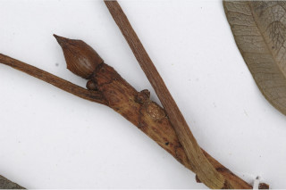
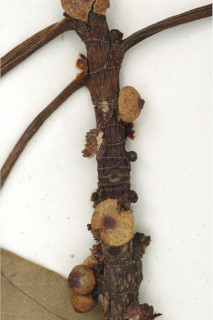
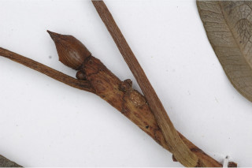
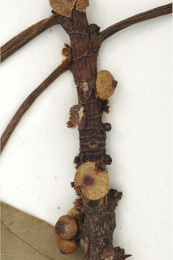

Deciduous trees up to 25 m tall.
25 ಮೀ. ಎತ್ತರದವರೆಗಿನ ಎಲೆಯುದುರು ಮಾದರಿಯ ಮರಗಳು.
Deciduous trees up to 25 m tall.
இலையுதிர் மரம் 25 மீ. உயரம் வரை வளரக்கூடியது.
Bark dark brown; blaze red.
ತೊಗಟೆ ದಟ್ಟ ಕಂದು ಬಣ್ಣದಲ್ಲಿರುತ್ತದೆ;ಕಚ್ಚು ಮಾಡಿದ ಜಾಗ ಕೆಂಪಾಗಿರುತ್ತದೆ.
Bark dark brown; blaze red.
மரத்தின் பட்டை கரும் ப்ரவுன் நிறமானது; உள்பட்டை சிவப்பு நிறமானது.
Branchlets terete, glabrous.
ಕಿರುಕೊಂಬೆಗಳು ದುಂಡಾಗಿದ್ದು ರೋಮರಹಿತವಾಗಿರುತ್ತವೆ.
Branchlets terete, glabrous.
சிறியநுனிக்கிளைகள் குறுக்குவெட்டுத் தோற்றத்தில் வளையமானது, உரோமங்களற்றது.
Latex white, profuse.
ಜಿನುಗು ದ್ರವ ಬಿಳಿಯಾಗಿದ್ದು ವಿಫುಲವಾಗಿರುತ್ತದೆ.
Latex white, profuse.
வெள்ளை நிற பால் அதிகளவு சுரக்கிறது
Leaves simple, alternate, spiral; stipules foliaceous, 0.7 cm long, caducous and leaving annular scar; petiole ca. 6 cm long, canaliculate, glabrous; lamina to 20 x 8 cm, oblong, elliptic-oblong, apex acuminate, base rounded, coriaceous, margin entire, glabrous and glossy; basally 3-nerved; midrib raised above; secondary_nerves 6-10 pairs, prominent and parallel, looped near the margin; tertiary_nerves reticulate.
ಎಲೆಗಳು ಸರಳವಾಗಿದ್ದು ಪರ್ಯಾಯ ಮತ್ತು ಸುತ್ತು ಜೋಡನಾ ವ್ಯವಸ್ಥೆಯಲ್ಲಿರುತ್ತವೆ; ಕಾವಿನೆಲೆಗಳು ಎಲೆಗಳಂತಿದ್ದು 0.7 ಸೆಂ.ಮೀ.ವರೆಗಿನ ಉದ್ದ ಹೊಂದಿದ್ದು ವಲಯಾಕಾರದ ಗುರುತುಗಳನ್ನುಳಿಸಿ ಉದುರಿ ಹೋಗುತ್ತವೆ;ತೊಟ್ಟುಗಳು ಅಂದಾಜು 6 ಸೆಂ.ಮೀ. ಉದ್ದ ಹೊಂದಿದ್ದು ಕಾಲುವೆಗೆರೆ ಸಮೇತವಾಗಿರುತ್ತವೆ ಮತ್ತು ರೊಮರಹಿತವಾಗಿರುತ್ತವೆ;ಪತ್ರಗಳು 20 X 8 ಸೆಂ.ಮೀ.ವರೆಗಿನ ಗಾತ್ರವಿದ್ದು ಅಂಡವೃತ್ತ – ಚತುರಸ್ರ ದ ಆಕಾರ ಹೊಂದಿದ್ದು, ಕ್ರಮೇಣ ಚೂಪಾಗುವುವ ತುದಿ, ದುಂಡಾದ ಬುಡ, ತೊಗಲನ್ನೋಲುವ ಮೇಲ್ಮೈ ,ನಯವಾದ ಅಂಚು ಹೊಂದಿರುತ್ತವೆ ,ಪತ್ರಗಳು ರೋಮರಹಿತವಾಗಿದ್ದು ಹೊಳಪಿನಿಂದ ಕೂಡಿರುತ್ತವೆ; 3 ಆಧಾರ ನಾಳಗಳು ಪತ್ರಗಳ ಬುಡದಲ್ಲಿರುತ್ತವೆ ;ಮಧ್ಯ ನಾಳ ಮೇಲ್ಭಾಗದಲ್ಲಿ ಮೇಲೆದ್ದಿರುತ್ತದೆ ; ಎರಡನೇ ದರ್ಜೆಯ ನಾಳಗಳು 6- 10 ಜೋಡಿಗಳಿದ್ದು ಪ್ರಮುಖವಾಗಿರುತ್ತವೆ ಮತ್ತು ಸಮಾನಂತರದಲ್ಲಿರುತ್ತವೆ ಹಾಗೂ ಅಂಚಿನ ಬಳಿ ಕುಣಿಕೆಗೊಂಡಿರುತ್ತವೆ;ಮೂರನೇ ದರ್ಜೆಯ ನಾಳಗಳು ಜಾಲಬಂಧ ನಾಳ ವಿನ್ಯಾಸದಲ್ಲಿರುತ್ತವೆ.
Leaves simple, alternate, spiral; stipules foliaceous, 0.7 cm long, caducous and leaving annular scar; petiole ca. 6 cm long, canaliculate, glabrous; lamina to 20 x 8 cm, oblong, elliptic-oblong, apex acuminate, base rounded, coriaceous, margin entire, glabrous and glossy; basally 3-nerved; midrib raised above; secondary_nerves 6-10 pairs, prominent and parallel, looped near the margin; tertiary_nerves reticulate.
இலைகள் தனித்தவை, மாற்றுஅடுக்கமானவை, சுழல் போன்று அமைந்தவை; இலையடிச்செதில் இலைகளைப் போன்றது, 0.7 செ.மீ. நீளமானது, எளிதில் உதிரக்கூடியது மற்றும் வட்டவடுக்களை ஏற்படுத்துகின்றன; இலைக்காம்பு 6 செ.மீ. நீளமானது, குறுக்குவெட்டுத் தோற்றத்தில் கேனாலிகுலேட், உரோமங்களற்றது; இலை அலகு முதல் 20 X 8 செ.மீ., நீள்சதுர வடிவானது, நீள்வட்ட-நீள்சதுர வடிவானது, அலகின் நுனி அதிக்கூரியது, அலகின் தளம் வட்டமானது, கோரியேசியஸ், அலகின் விளிம்பு முழுமையானது, உரோமங்களற்றது மற்றும் பளபளப்பானது; 3 நரம்புகளை தளத்திலே உடையது; மையநரம்பு மேற்புறத்தில் அலகின் பரப்பைவிட உயர்ந்து இருக்கும்; இரண்டாம் நிலை நரம்புகள் 6-10 ஜோடிகள், தெளிவானது மற்றும் இணையானவை, ஒன்றொடுன்று விளிம்பின் அருகில் (லுப்) இணைந்தவை; மூன்றாம் நிலை நரம்புகள் வலைப்பின்னல் போன்றவை.
Inflorescence syconia, sessile, depressed - globose, in clusters of 2-6, on very short crowded tubercles in the axils of the leaves or most frequently at the scars of fallen leaves; flowers unisexual.
ಪುಷ್ಪಮಂಜರಿಗಳು ಸೈಕೋನಿಯ ರೀತಿಯವುಗಳಾಗಿದ್ದು,ತೊಟ್ಟುರಹಿತವಾಗಿರುತ್ತವೆ, ಅದುಮಿದ ಗೋಳಾಕಾರದಲ್ಲಿರುತ್ತವೆ ಮತ್ತು ಎಲೆಗಳ ಅಕ್ಷಾಕಂಕುಳಿನಲ್ಲಿ ದಟ್ಟವಾಗಿ ಸಂದಣಿಗೊಂಡ,ಕಿರು ಗಾತ್ರದ ಗುಬುಟುಗಳ ಮೇಲೆ ಅಥವಾ ಹೆಚ್ಚು ಸಂಧರ್ಭಗಳಲ್ಲಿ ಎಲೆಯುದುರು ಗುರುತುಗಳಲ್ಲಿರುತ್ತವೆ; ಆಕಾರದಲ್ಲಿ; ಹೂಗಳು ಏಕ ಲಿಂಗಿಗಳು.
Inflorescence syconia, sessile, depressed - globose, in clusters of 2-6, on very short crowded tubercles in the axils of the leaves or most frequently at the scars of fallen leaves; flowers unisexual.
மஞ்சரி சைகோனியம், காம்பற்றது, அழுத்தப்பட்ட-கோளவடிவானது, 2-6 தொகுப்பாக கிளைகளிலுள்ள கழலைகள் மேல் மற்றும் இலைகளற்ற முதிர்ந்த கிளைகளில் தோன்றுபவை; மலர்கள் ஓர் பாலானவை.
Syconium, sessile, ca. 0.5 cm across, greenish; achenes smooth.
ಸೈಕೋನಿಯ (ಸಂಯುಕ್ತ ಫಲ) ಗೋಳಾಕಾರದಲ್ಲಿದ್ದು ಅಂದಾಜು 0.5 ಸೆಂ.ಮೀ. ಅಡ್ಡಗಲತೆಯನ್ನು ಹೊಂದಿದ್ದು ತೊಟ್ಟುರಹಿತವಾಗಿರುತ್ತವೆ ಮತ್ತು ಹಸಿರು ಬಣ್ಣ ಹೊಂದಿರುತ್ತವೆ;ಅಖೀನುಗಳು ನಯವಾಗಿರುತ್ತವೆ.
Syconium, sessile, ca. 0.5 cm across, greenish; achenes smooth.
சைகோனியம், காம்பற்றது, 0.5 செ.மீ. குறுக்களவுடையது, பச்சை நிறமானது; சிற்றுலர்கனி (அக்கீன்) வழவழப்பானது.

 


